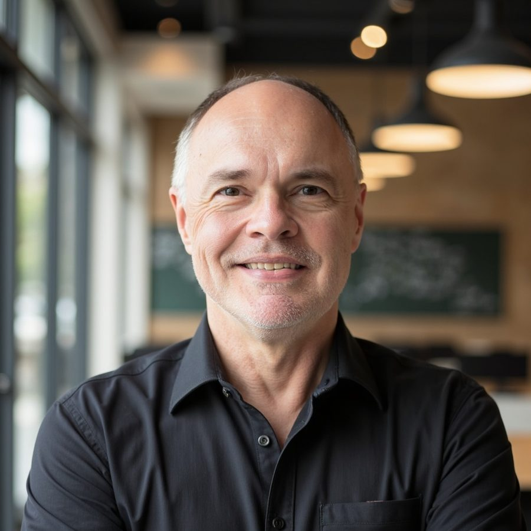

We have been in your shoes. Now we are in your corner.
Founders and chief executives leading medtech companies from startup through pre-revenue and on to early revenue. First-time chief executives. Serial founders on their second or third venture, who know the questions change from one company to the next.
Medtech founders do not fail at inflection points because they lack good consultants. They fail because good advice arrives one lane at a time.
The regulatory pathway is chosen on technical grounds, the funding round is sized to the pathway, and the commercial question arrives last, when the claims are fixed and the money is committed.
The financial story has to be one narrative for the investor, the board or the acquirer. Built from separate lanes, that story is hard to hold together, and the gaps show when the stakes are highest.
We start with who will use the device, and work back to the science. Who uses it, who buys it and who pays for it set the claims you need to make. The claims set the evidence. The evidence sets the regulatory pathway. The pathway sets how long the company is funded before revenue, and so how much you raise and when.
Most plans are built the other way round. These decisions are not independent, and taking them in the wrong order is expensive. We help founders build the strategy in the right order, with the science, the market, the pathway and the raise in one plan.
Innovation and science lead. The strategy has to extend beyond the science.
Our knowledge and judgement are built on situations like yours: capital raises, exit planning, restructurings, board transitions. We bring that experience to every engagement.
Capital strategies depend on regulatory sequencing, and pathway decisions carry financial consequences. The story told to the board and to investors has to hold up under diligence. These questions are not always visible to the founder in the middle of managing cash, hiring, working with KOLs and much else. They become visible when someone who has been through these moments many times is working alongside you.
Nearly three out of four early-stage medtech companies in the UK and Ireland are focused on entering the US market. We have direct, hands-on experience building, growing and exiting companies in the US. What you need is to know now what the US will eventually require of the company you are building: the clinical evidence, the regulatory and quality system and the capital structure. This is all driven by the commercial strategy.
You get a US perspective into the room, and a partner who can tell you early what a given pathway will cost in time and capital, before you spend money finding out.
Whether you are building and scaling in the UK, Ireland or the rest of the EU, or your plan is to enter the US, we have run those routes.

Kevin has spent over two decades operating and advising early-stage companies, as a medtech founder, chief executive and chief financial officer in the US, the UK and the EU. He has raised capital from angel and institutional investors at early and growth stages, and led restructurings and turnarounds, including a division of a $3B health system.
His advisory work has run from concept to revenue in global markets.
"I rarely come across a CEO with such an acute understanding of the clinical and academic world. He helped frame our ideas. Making them a commercial success is the difficult part. Yet Kevin makes it so easy and efficient."
Jean-Philippe Pignol, MD, PhD, Chair, Concure Oncology Scientific Advisory Board
Jonathan brings two decades of commercial leadership across the UK, Europe, the Middle East and emerging markets. For nine years he was Head of International Sales at Nevro Medical, a global neuromodulation company, responsible for 16 markets worth in excess of $64M. He tripled EMEA revenues, while launching the UK business from zero to a 20% market share.
Since 2020 he has run Barclay Harris Consulting, turning clinical validation into commercial growth. Alongside it he led UK commercial operations at APOS Health, a NICE-recommended musculoskeletal platform, opening NHS accounts through the Health Innovation Networks. Prior to that, Jonathan served as CEO of O2 Worx, a UK maker of hyperbaric oxygen therapy chambers. His career began in hospital sales with Vygon, Atrium Medical and Apatech.
While Barclay Harris Kelley Consultants is based in Edinburgh, as a firm we work with founders across the UK and Ireland, and with US companies whose plan touches the UK, Ireland or the rest of the EU.
The clients we work with share an instinct for the moments that call for a decision, not hours of additional analysis. Judgement applied at these inflection points determines whether the venture succeeds or fails.